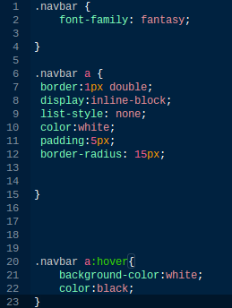

So heres what I did to create the navbar. First I created a unordered list.
To do this I used the ul tag. The ul tag creates and unordered list like this.
Inside the ul tags you put li tags. li stands for list item.
<ul><li>list content</li></ul>
A navbar contains links to other pages on your site. To do this I used the a tag.
The a tag allows you to put a link on your site.
link So what I did was put a li tag in between an a tag.
This way it showed up as both a link and a list item.
Next I added the css. First I added a class. All you do to add a class is go inside the opening tag and type class="insert anything you want."This allows you to add css to things that only have that class. To do this you type ."class name" then you put what ever css you want to use.
So I added the A class called navbar to the ul tag. This is all the css I wrote for it. 
I changed all the text font with the class navbar to fantasy. You can see how I did that on the top of the picture. Next I made the navbar instead of a few links. I gave it a border, I made it so that they were next to each other instead of above and below with inline block. I removed the list style (bullet points). I made the font color white. I gave it padding (a invisible barrier that nothing can get through). I gave it a radius so that the edges were curved. lastly I made it so that the font color and background color in the borders inverted when you hovered over it with your mouse.